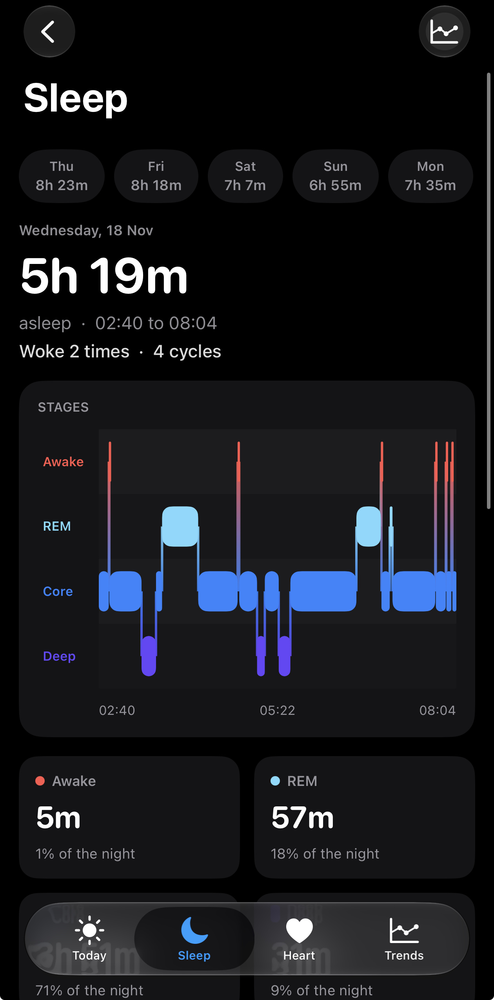

Sleep
Sleep debt tracker
Last seven nights against your need, plus stages, bedtime target, and wake timing from Apple Health.
Sleep debt app · iPhone
An Apple Health sleep tracker that shows the debt, the heart rate behind the night, and one action for today. Apple Intelligence turns those readings into a clearer analysis, on the iPhone, without changing the numbers.





Baseline is a sleep debt app for iPhone. It compares the last seven nights with the hours you need, then keeps sleep stages, tonight’s plan, and timing on their own screens. The Today tab does not average everything into one vague score. It names the signal that matters and picks a single action.
Short history stays on “Calibrating.” Baseline does not fill the gap with a guessed number. A Home Screen widget repeats that same today action.
Sleep
Last seven nights against your need, plus stages, bedtime target, and wake timing from Apple Health.
Heart
Heart rate, heart rate variability, and resting heart rate, read as recovery and as the overnight curve.
Today
A single suggestion for the day. The chosen action stays fixed even when the wording is rewritten.
Mood
Morning, afternoon, and evening check-ins, then a look at how that lines up with deep sleep.
On your iPhone
Where Apple Intelligence is available, Baseline uses the on-device model to explain what the calculated result means. It writes the note under tonight’s sleep target, the reason for today’s suggestion, the heart and readiness summary, trend commentary, and the link between mood and deep sleep. You can also ask about the last 30 days and today.
The model is told to keep every number and clock time exactly, and not to invent a measurement or a diagnosis. If Apple Intelligence is unavailable, the same facts appear in plain text. Summaries run on the device and are not stored on our server.
Baseline is wellness software. It is not a medical device and it does not diagnose, treat, or prevent any condition. Heart-rate dipping, readiness, and sleep debt are readings of your own history, not a clinical test.
With permission, Baseline reads heart rate, heart rate variability, resting heart rate, sleep, and date of birth. It does not write back to Apple Health. Those readings are not sold and are not sent to an advertising network.
Sign in with Apple keeps a sleep schedule and mood check-ins with your account. Premium is an optional one-time purchase through Apple. It unlocks nothing: the free app and Premium show the same sleep debt tools. It exists only to support development.
It is the recent shortfall against the hours you set as your need, shown from Apple Health sleep. It is a wellness figure for the last week, not a medical debt and not a diagnosis.
No. Apple Intelligence rewrites the explanation. Sleep debt, heart rate, HRV, readiness, and the chosen action stay as calculated. If the model is off, you still see the plain result.
The Apple Intelligence writing appears when Apple Intelligence is available and turned on for that iPhone. Other iPhones still get the sleep debt tracker, heart screens, mood, and today’s action in plain text.
The summaries are generated on device and are not stored on our server. Account data is separate: email if Apple provides it, your sleep schedule, and mood check-ins. Details are in the Baseline privacy policy.